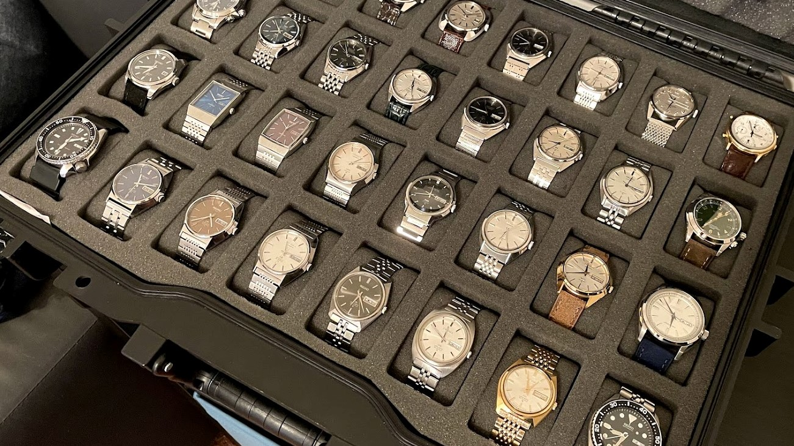

What is Vintko?
Welcome to Vintko! I am a curator of vintage Seiko watches and an amateur photographer.
Up until getting engaged in 2019, I never cared for watches. I had my box full of outfit-matching Kenneth Cole jams with dead batteries, and that was all I needed. During the engagement, my in-laws insisted on gifting me a nice watch as tradition, but I refused because nice watches were a complete waste of money to me.
While shopping, the wife pulled me into a department store to just pick something.
As enticing as the
Hugo Boss models were, I went home to do some research before blindly grabbing something. The next 12 hours
pretty-much changed my life. I locked onto #Seiko and scoured Amazon, landing on the green Alpinist. At
that point, I was addicted; subreddits, forums, Facebook groups, etc.
After learning a lot about Seiko, I started connecting dots and wondered if (hoped) the watch my dad wore
when I was young was a Seiko. We visited my dad during our honeymoon, and he gifted me a 1984
6309-7290 Slim Turtle
that he purchased new in Singapore.
It will forever be a favorite in the collection; it means a lot to me. I also ended up inheriting my late grandfather's watch: another Seiko!
Obviously, Seiko has a special place with me.